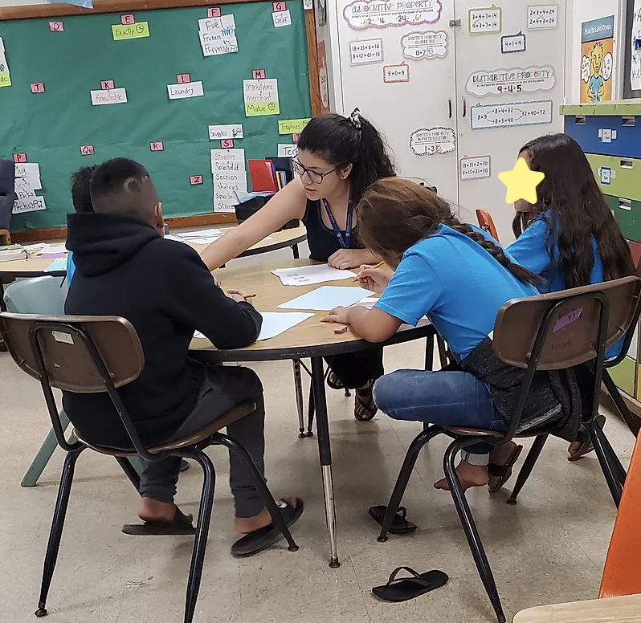
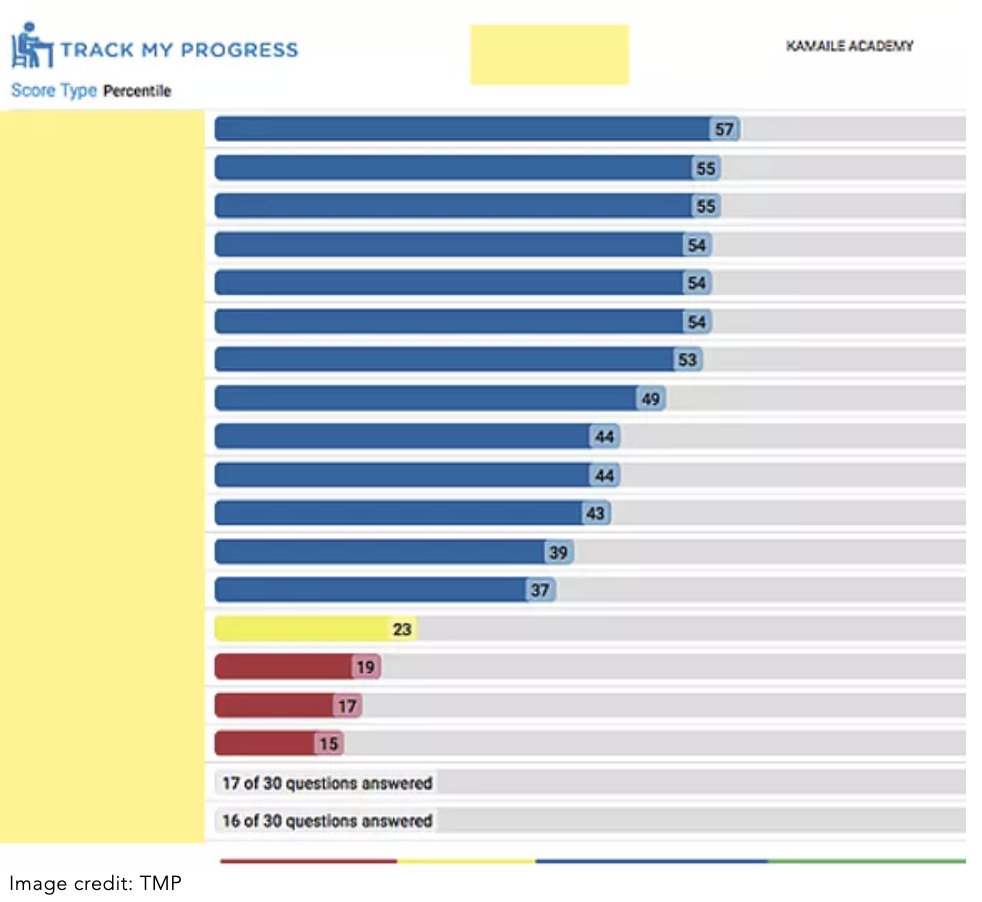
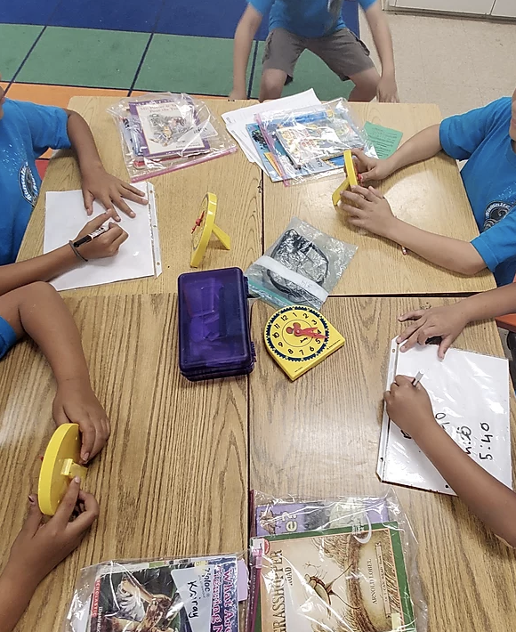
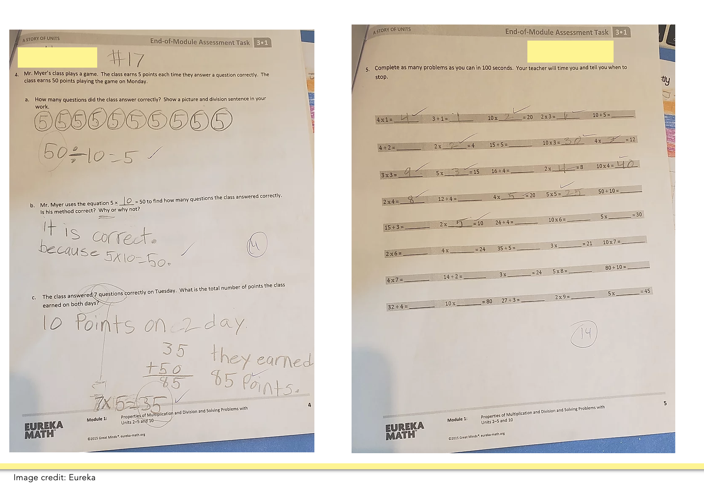
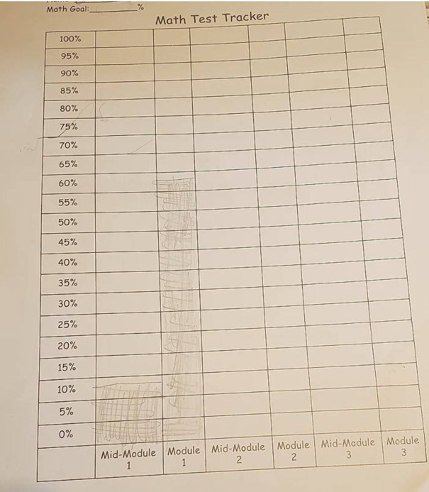

Teacher Growth- Assestment
Diagnostic Assestment
Formative Assestment
Summative Assestment
Student Engagement
Conclusion
Introduction
Using multiple assessments is a critical component in a teacher's profession. It not only lets a teacher monitor students' progress in the unit of learning, but it also allows a teacher to see how she or he can change their daily instruction to ensure mastery. I believe that assessments are also an essential part of students' motivation in the class. A student who knows how they are doing academically will be a more engaged learner that works harder in the class to improve his or her scores. I monitor students' progress in my class using multiple methods of assessment. At the beginning of the year, the students take a diagnostic test online. Then throughout the unit, students take daily formative assessments. Once the students get to the middle of the unit, they take a mid-module evaluation, and at the end of the unit, they take the module assessment. Both the mid-module and module assessments serve as summative assessments. These assessments help to guide my decision making in the classroom such as when to put students into small group instruction with me or knowing when it is time to reteach a lesson the whole class. The students keep goal folders where they keep their daily exit tickets and summative assessments. They also have a student tracker that they use to record their scores on the summative assessments and evaluate their own growth. In this way, I keep as much transparency with the students as possible. The students can use the data to make decisions to help them improve their learning. Here you will find how I use different assessments in my classroom throughout the Mathematics subject area.
Diagnostic Assessment

Artifact shows how I work in a small group with students who need more support. After looking at their TMP data.
At Kamaile Academy, the grade level teachers follow the Eureka Math Curriculum. However, this curriculum does not come with a designated diagnostic assessment. Instead, the school tells us to test the students at the start of the year on a computer program called Track My Progress (TMP). This program is not calibrated to the Eureka Math program. The people who mainly look at the scores on TMP are the Math Specialist Teachers. Therefore, the grade level does not set up a score that is considered "pass" or "fail". The grade level never sits down to look at the ratings or uses the scores in any way to improve classroom instruction. I have decided to use the TMP data to decide how students would be grouped for the first week of classes during small group instruction.
This computer program tests students throughout all of their math skills. When a student gets a question correct, the difficulty of the next question increases. There are three difficulty levels: easy, medium, and hard. If the student keeps missing questions, then the level of difficulty decreases on the test. This is all done through an algorithm.
The test takes the students approximately 20 minutes to complete. The students are given a score that I can see as either the percentile score compared to other students in third grade who take this test around the state or the grade level equivalent.

Artifact shows how the whole class performed on the different math standards on the Track My Progress assessment at the start of the year.
Image credit: TMP
The table above shows the whole class percentile on the different math standards tested on this assessment. The scores above showed me that all of my students scored below grade level. This showed me that I need to work on all the standards rigorously to be able to boost their scores by the end of the year. The table also indicates four seasons (Fall, Winter, Spring, and Summer). The students take this test three times a year. At Kamaile Academy, we don't test them in the Spring session. Therefore we will see how the students have improved on their scores throughout the year.

Artifact shows how each student performed individually on the Track My Progress assessment. The scores are shown by where the student ranked in percentile form compared to all other students taking this assessment across the state.
I know from these scores above that none of the students are at a third-grade level. However, the students in red need the most support. Red indicates that they took mostly easy questions, and they still missed most questions. Yellow means they took mostly easy and some medium questions, but they got more questions correctly. Blue means that they took a variety of medium and hard questions, but they missed a lot of questions.
The administration team at our school has changed how the variety of colors on the bar graph reflect the students' percentile score. Students who got a 20 % or higher are not considered in the "red zone" according to our scoring on TMP. However, a student who is getting 50% on TMP is performing below half of the other third graders who take this test online. A score of 50% is not a passing score, but it is considered a "blue score" according to the TMP scoring standards for our school. Therefore the color-coding scores are used mainly by the Math Specialist Teacher to see which students are performing well below their grade level and need the most assistance. I argue that any student that is not performing above 75% should need a lot of support in Math. Therefore I only use the percentile graph to create my lowest performing math group in the first week of school. I take the bottom six students according to the percentile scores, to be one small group. This is because those students performed the same or less than 40% of the population of students who took this test.

Artifact shows how each student performed individually on the Track My Progress assessment. The scores are shown by where the student ranked in percentile form compared to all other students taking this assessment across the state.
The bar graph above shows the grade level equivalent for each student's score. The students in red and the student yellow all scored a first-grade level (or almost second-grade level) score. Five students in blue scored a second-grade level. Everyone else scored at a third-grade level. I use this diagnostic assessment to create small groups for the middle and higher-level math groups. I would make sure that the six students that performed the lowest, work with me more frequently in small groups throughout the week. I would also look at their scores to see which areas they need the most support.

Student K.V.'s TMP data per question answered.

Student K.V.'s TMP data per question answered.
The two student scores above show a range of questions the students received and the standards for teaching questions. A level of difficulty ranks each question. B.M. did mostly easy and straightforward questions. However, this student still missed most of the questions. This is why she was placed at a first-grade level. Looking at the standards on B.M's chart you can see that she answered mostly second-grade level standard questions. This means that this student has not been able to answer questions on her grade level and she needs more support with second and first grade-level standards to be able to build the foundation for the third grade-level standards.
On the other hand, K.V. received some medium questions and the most accessible questions. However, this student missed mostly base ten questions. This shows me that this is an area that K.V. needs extra support in small group instruction. Unlike B.M, K.V answered questions on third grade-level standards, which shows me that this student just does not know the third-grade level standards since it is the beginning of the year. However, by the second TMP assessment, I expect to see K.V. answer more questions correctly on the third-grade level standards since K.V. would have had more time to learn third grade standards throughout the semester.
In the end, I use the information on the TMP assessment as a baseline for each student and make small group instruction at the beginning of the year using this data. However, after the first week of teaching, I rely more on formative assessments to create small groups and to change direction. I still refer back to the TMP assessment to see how much progress the students have made throughout the year.
References:
All of the artifacts on this page are taken from the Great Minds Eureka website: Great Minds Eureka. (2019). Eureka Math.
Formative Assessment
Formative Assessments are a way to help plan for instruction and see how students are doing on the specific standards every day. For Math, I use whiteboards and exit tickets to check for understanding throughout the lesson.

Students working on a problem using the white boards.
For each math class, the students begin the lesson by grabbing a marker and a whiteboard. The whiteboard is made up of a white and a red piece of paper. The students write on the white piece of paper their answer. Then, they show me the red piece of paper so that I know they are ready to share their work. When I say "show me your work" the students flip their whiteboards so that I can scan across the room and get an overview of their answers and whether they got the skill taught by getting the right answer or whether I need to go over the concept again. If I see only a couple of students missed the answer, then I pick those students for small group instruction later on in the lesson.

Student working on a problem using the white boards.
Every day the students end the math lesson with an exit ticket that hits the standards taught that lesson. The exit ticket is graded out of two points and comes along with the Eureka Math Curriculum used at Kamaile Academy. The exit ticket is used to check to understand the lesson's teaching. It allows me to know whether I need to reteach the entire lesson to the whole class, teach a small group the lesson the next day or move on to the next lesson. Deciding which course I should take depends on what the students score on the exit tickets. A core of 2 or 1.5 is a high score and is considered as passing to me. A score of 1 or below means that the student needs to be retaught specific skills from that lesson. Since the grade level has not worked together to decide what specific score means the student is proficient in that lesson, I have chosen the highest ratings (2 and 1.5) as passing, and the lowest scores (1, 0.5, and 0) as needs more support.

This artifact above shows a student's exit ticket. This student got a score of 2 because they were able to answer every part of the question correctly.

This artifact above shows a student's exit ticket. This student got a score of 0 because this student was only able to answer part of the question correctly, and the student did not answer the question entirely by using a multiplication sentence.
The following exit tickets shown above are from two different students. One student got a two while the other student got a zero. According to these two exit tickets, I know that the student on the left understands how repeated addition and multiplication are related and can translate a repeated addition sentence into a multiplication sentence. The student on the right needs more support creating the link between repeated addition and multiplication. This student would work with me the next day using manipulatives to be able to grasp the concept better. I would give the student the right manipulatives to put into groups and then look at how those groups would make a repeated addition sentence and a multiplication sentence.

This artifact above shows every students' score on the exit tickets throughout the first part of Module 1. The first row indicates which standards are covered in each exit ticket. The second row shows what lesson the exit ticket was given. Lesson 10 and Lesson 10 Redo are highlighted as examples.
The table above shows how I track the students' exit ticket scores. I do this so that I can see the trends on how the students do on average on each exit ticket and to see how the students do overall throughout the different lessons. I covered the students' names with a yellow box on the left for privacy. This table shows Module 1 exit tickets. This is the first topic taught in the year, and it is related to learning multiplication and division. The top row shows the standards tested for each exit ticket. The second row shows the lesson number the students were tested on for the exit ticket. The cells with no number indicate that the student was absent that day for the math lesson. This lets me know that the student is coming in the next day without knowing what the rest of the class learned in math the day before. This is important information because I know this student needs to be in the small group that day so that she or he can catch on the skills taught the day before.
By looking to see how the students, as a class, do on average on the exit tickets, I can see if I should be reteaching the lesson to the whole class or just to particular students. This is also a way for me to see which students did not complete the exit ticket because they were absent. Therefore I know whether they are missing a lot of content for math, and I know that I should plan to reteach them the lesson during small group instruction.
Taking a closer look at the yellow box, you can see the scores for Lesson 10 and Lesson 10 Redo. When I graded Lesson 10 exit tickets, I noticed that only two students scored a 1.5, and no students scored a two on the exit ticket. This allows me know that most of the class needed more support in this lesson. Therefore I decided to reteach the lesson. To see the lesson and how it was retaught, take a look at the Planning for Instruction section. After reteaching the lesson, I gave the students the same exit ticket as the day before. Since I do not help the students during the exit ticket, they did not know the answers after doing the exit ticket the first time. When they took the exit ticket the next day, most students improved their scores, and seven students scored a 2, which is the highest score you can get on the exit ticket.
References:
All of the artifacts on this page are taken from the Great Minds Eureka website: Great Minds Eureka. (2019). Eureka Math.
Summative Assessment
Summative assessments are a way to see student growth throughout the whole unit. Summative assessments allow me to see what standards the students understand. In a broader scope the summative assessments targets a more significant amount of rules than the daily exit tickets. Through the summative assessments, I can also see how a student can integrate different skills into one question. The Math subject taught includes a mid-module and evaluation of the module for each unit. I take the assessments from the Eureka Math Curriculum.
The Mid-Module Assessment and Module Assessments integrate the standards taught up until the point of the assessment. The Mid-Module Assessment for the first module includes the standards: 3.OA.1, 2, 5, and 6. The Module One assessment includes all the standards targeted in the Mid-Module assessment plus 3.OA. 3, 4, 7, and 8. The Module One assessment also consists of a fluency assessment where the students are timed for 100 seconds on multiplication and division questions.

The two artifacts above are the student's sample work of the Mid-Module 1 assessment. There are three questions in this assessment. Each question is worth 4 points.


The five artifacts above are the student's sample work of the Module 1 assessment. There are four questions, and each question is worth 4 points. The fifth question is assessed as they either answered 30 questions correctly and passed or they did not pass.
I noticed in both the Mid-Module and the Module One Assessments that the students need to work on stamina. I knew this because the students took less than 20 minutes on the Track My progress assessment giving online at the beginning of the year. I was told by the Math Specialist to provide the students with the whole hour to take this assessment. Therefore I know that students are just clicking through the assessment as quickly as possible instead of taking the time to read the questions and to think about their answers. When I gave the assessment last year, I noticed that most of the students would try to work on the first page, but when they saw that there was more than one page in the assessment, the students would give up and start writing random numbers on their pages to get the assessment done.
This meant that I knew the students would not perform according to the standards if they were not given breaks in between sections of the assessment. I gave the Mid-Module One in sections. I first gave everyone the first page and then moved on to the second page and so forth. This meant that the Module One assessment took three days to complete. I also gave both summative assessments in small groups. This way, I could help students read the question. As the artifacts above show, the questions on each page are divided into sections, and they require being able to read at a third-grade level. Since most of my students are not at a third-grade reading level, I did not want reading to be a reason the students did not perform well on the assessments.

This artifact shows every students' scores for each question on the Mid Module and Module assessments. The standards targeted in each question are indicated on the second row.
The following table shows the teacher tracker my grade level uses to track students' summative data. The second row shows the standards hit in each question. The third row shows the question that is being scored. I hide student's names for privacy on the right column.
Each question targets different standards. The questions are ranked by a different color. Green means that the question received the maximum amount of points (4 points). Yellow means the question received 3 points. Red means the student received 2, 1 or 0 points for a question. The Mid-Module Assessment is scored out of 12 points. The Module Assessment is scored out of 16 points. The percentage at the far right corner of each assessment shows how the students did throughout the whole test. The Module Assessment also includes a fifth question that is a math fluency assessment where the students answer as many multiplication and division questions in 100 seconds as possible. This question is not scored because the grade level has not decided how to decide if a student has passed or not on this question.
I noticed that most of the students improved in their scores from the Mid-Module Assessment to the Module Assessment. Visually there are also less red scores on the Module Assessment. This shows that practicing the skills taught up to the Mid-Module Assessment during the second half of the module helped students solidify the information they needed to be able to increase their scores on the second module. I also took two days after the Mid-Module Assessment to review the third question of the assessment since most students had a red score on this question. Only three students scored green on this assessment. Reviewing the skills hit on that question allowed the students to build a stronger foundation when they moved on to learning about the second section of the module.
Once I finish scoring the Module Assessment, I also take two days to review the second question and the fourth question because students did not do as well on those questions. On the second question, most students got a score of 3, which tells me that they missed only a small section of the question. This can be addressed with a mini-lesson to the class. On the other hand, a large majority of students got red on the fourth question. This means that they need more practice with this type of question, and the standards hit on this question. This required more review before beginning the new module.
References:
All of the artifacts on this page are taken from the Great Minds Eureka website: Great Minds Eureka. (2019). Eureka Math.
Student Engagement
Motivating students is an essential part of getting students to increase their performance in school. I motivate the students in my class through student trackers and setting goals. Every student receives a Math Test Tracker that allows them to practice creating bar graphs and plugging in the data for each Math Summative assessment. They input the percentage they got correct in each evaluation into the tracker. They also have a math goal at the top of the page so that they can remember what they are aiming for. If they achieve their math goal, I help them create a new math goal for the next test. After giving the students back their scores, I sit down with each of them, and we reflect on why they got the score they got on the test. We also come up with ways that they can improve their scores on the next assessment.

This artifact above shows a student's math tracker. This student has a math goal to get 70% on the third test.

This artifact above shows a student's math tracker. This student has a math goal to get 100% on the third test.
The math tracker on the left shows a student who only got around 10% on the first test but improved their score to 60% by the second test. Even though this student did not get a proficient score in either assessment, they have shown a lot of growth from the Mid- Module test to the Module one test. I make sure to discuss their growth so that the students know they are on the path towards mastery. They had chosen a goal of 70% by the Mid-Module 2 assessment. This student has improved her or his score because I have been working with him/her in small groups and I notice this improvement during the exit ticket work. However, 60% is still not a passing score. Therefore, I know that I need to continue to pull this student in small group work so that the student can receive the foundational skills to move forward.
The student on the right went from 50% on the Mid-module to an 83% on the Module one assessment. This student reached proficient on Module one. This shows me that this student understands the skills taught throughout the whole unit. This student decided to aim for 100% for the Mid-Module 2 assessment after seeing the score from the Module 1 assessment. The student on the left would still need extra support on skills from Module 1 while the student on the right would need more enrichment opportunities on skills related to Module 1. The student on the right will be working on the IXL computer program to receive more enrichment opportunities. I will get this student to go to the standards for math that were hit in the mid-module assessment since this is where the student struggled (by getting only 50% on the mid-module test).
The process of going through the assessments with the students helps them to feel more motivated in the math lessons because they want to get better scores for the next assessments (Usher and Kober, 2012). This helps them to feel more engaged and gives them intrinsic motivation instead of extrinsic motivation in the classroom. The students understand that they can always refer back to their assessments and their goals. The math tracker is kept in a goal folder; each student keeps that easily accessible to them by being located in a basket next to the classroom library.
References:
Usher, A. & Kober, N. (2012,May 22). Student motivation: An overlooked piece of school
reform.
Retrieved from https://www.cep-dc.org/displayDocument.cfm?DocumentID=405
Conclusion
Monitoring students' progress consists of more than just grading a test at the end of the unit. In this math class, I gathered meaningful data through multiple methods of assessments given throughout the year. The diagnostic assessment served as a baseline to see where the students were at the beginning of the year. The formative assessments served tools for how I would make decisions in relation to creating of small group instruction and altering instruction in the moment of instruction for the next day. The summative assessments monitored students' progress for the unit and informed me of what decisions I needed to make as an educator for the next lessons and to see what the students have learned throughout the whole unit. I make it a priority to continuously gather data that can guide my decision-making process as an educator and so that I can meet my students where they are at in their learning process. I also gather data to let the students know where they are so that they can also use that information to decide what they need to do in the next few lessons to improve their learning.
Reference:
CCSSO’s Interstate Teacher Assessment and Support Consortium (InTASC). (2011, April). PDF. Washington.